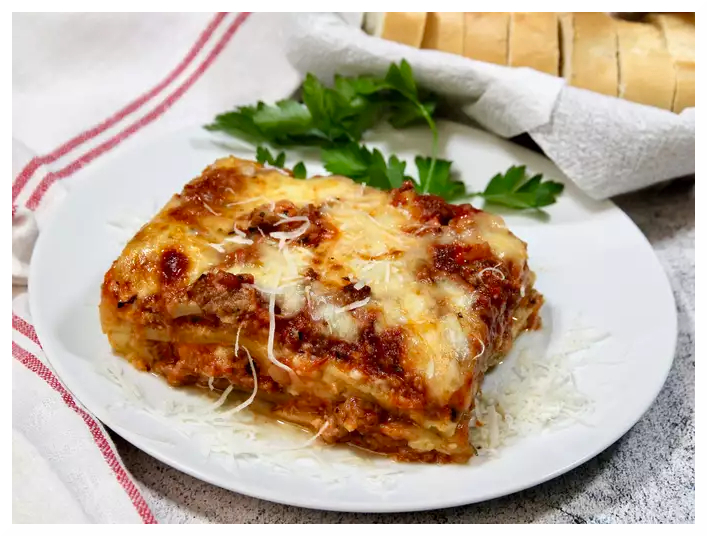

Lasagna

Descripción
Esta es la receta especial de lasaña casera de mi madre, con una salsa
de tomate carnosa y casera y un relleno delicioso de queso. Un relleno
de lasaña casera más tradicional se haría con ricotta, pero la receta
de mi madre lleva una mezcla de requesón pequeño y parmesano.
No he encontrado ninguno mejor en ningún sitio. Sírvela con una ensalada
de hojas verdes y pan de ajo crujiente.
La lasaña casera no es tan difícil de hacer como parece. No te sientas
intimidado por todas las capas de delicioso sabor italiano: ¡prueba esta
receta de lasaña casera hoy mismo!
Ingredientes
Estos son los ingredientes que necesitarás para hacer esta receta de
lasaña casera de primera:
- Carne: Esta receta de lasaña comienza con una libra de carne molida
(½ libra de cerdo molido, ½ libra de carne molida magra).
- Cebolla: Una cebolla picada se cocina hasta que esté translúcida con
la carne molida.
- Tomates enlatados: Necesitará una lata de salsa de tomate y una lata
de tomates triturados.
- Hierbas frescas: Para obtener un sabor fresco, pica dos cucharadas de
perejil y machaca un diente de ajo.
- Azúcar: Una pizca de azúcar equilibra toda la acidez de los tomates.
- Especias y condimentos: Esta lasaña casera se condimenta con albahaca
seca, orégano seco, sal y pimienta negra.
- Fideos: Por supuesto, necesitarás fideos para la lasaña. Esta receta
requiere fideos sin cocer, pero puedes utilizar la variedad lista para
el horno para ahorrar tiempo.
- Queso: La capa de queso se compone de requesón y parmesano. También
necesitarás mozzarella rallada.
- Huevos: Los huevos hacen que la capa de queso sea más cremosa. Además,
actúan como aglutinante (lo que significa que mantienen la capa unida).
Pasos
Hacer lasaña casera es mucho más fácil de lo que parece. A continuación
encontrarás la receta completa, paso a paso, pero aquí tienes un breve
resumen de lo que puedes esperar:
- Cocinar la carne: Cocinar la carne picada en una sartén hasta que se
dore y se desmenuce. Añada la cebolla y continúe cocinando hasta que
esté translúcida. Incorpore las conservas de tomate, la mitad del
perejil, el ajo, la albahaca, 1,5 cucharaditas de sal, el orégano y
el azúcar.
- Cocer los fideos: Hervir los fideos de lasaña en agua ligeramente
salada hasta que estén al dente.
- Hacer la capa de queso: Mezclar en un bol el requesón, el queso parmesano,
los huevos, el perejil restante, la sal restante y la pimienta.
- Montar la lasaña: Poner en capas los ingredientes según la receta (empezando
por la salsa y terminando por la mozzarella) hasta montar la lasaña.
- Hornear la lasaña: Cubrir con papel de aluminio y hornear en el horno
precalentado durante aproximadamente media hora. Retirar el papel de aluminio
y seguir horneando hasta que la parte superior esté dorada.
Volver al índice